Crosswalk
Digital, Blackmagic HD
Jolinna worked as director of photography on Crosswalk, a film about a college student haunted by her previous relationship.

 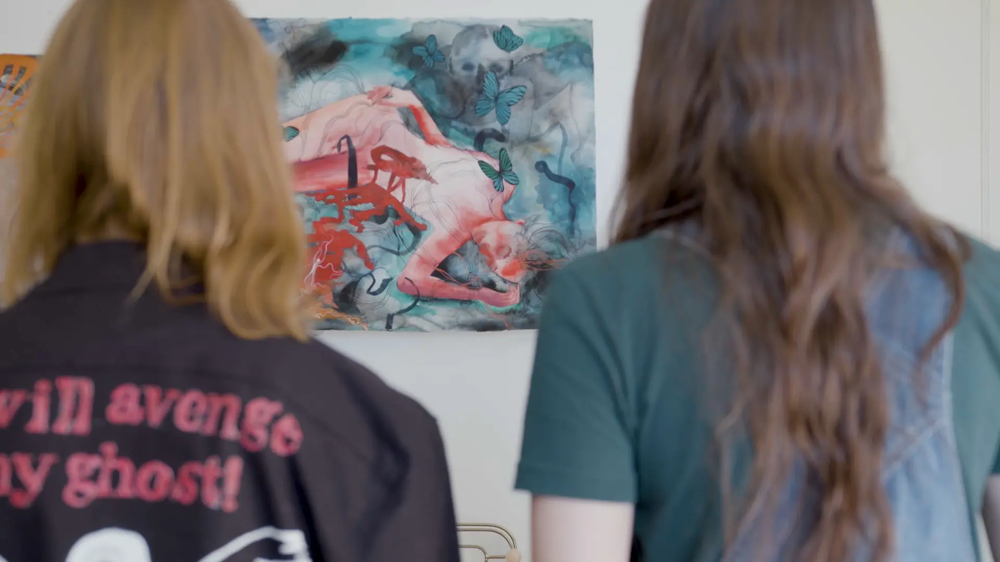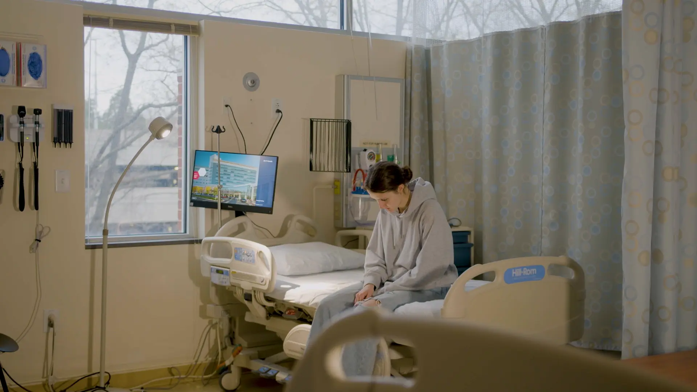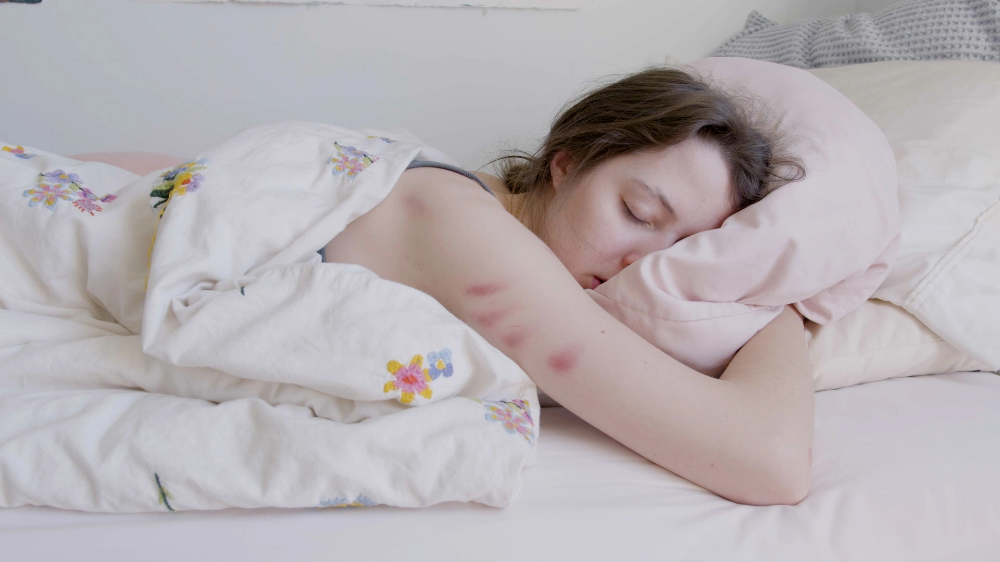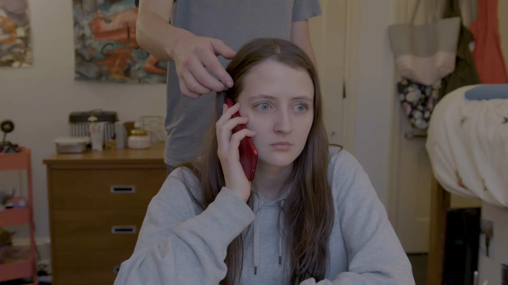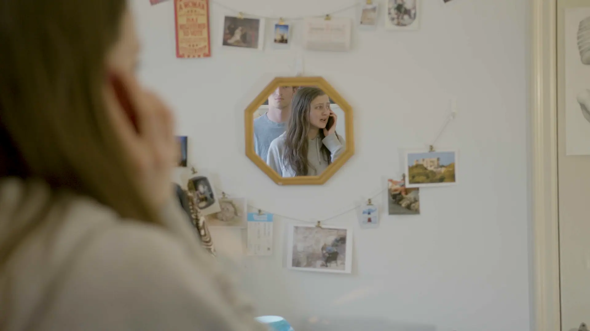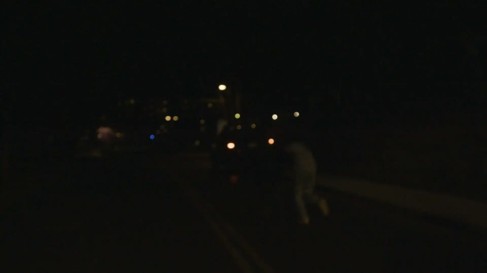
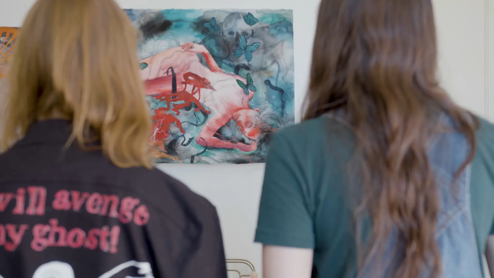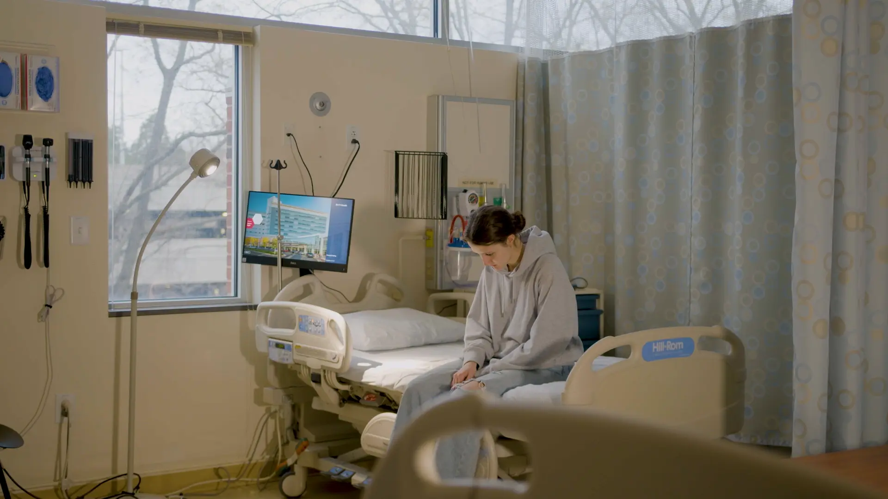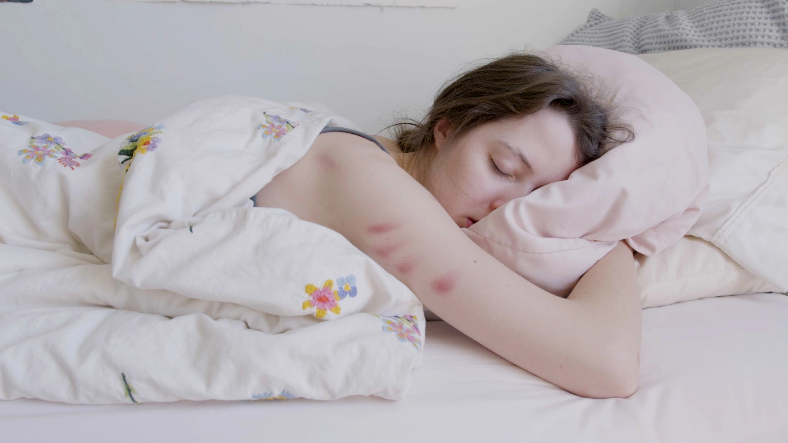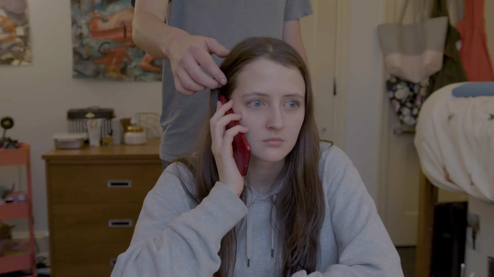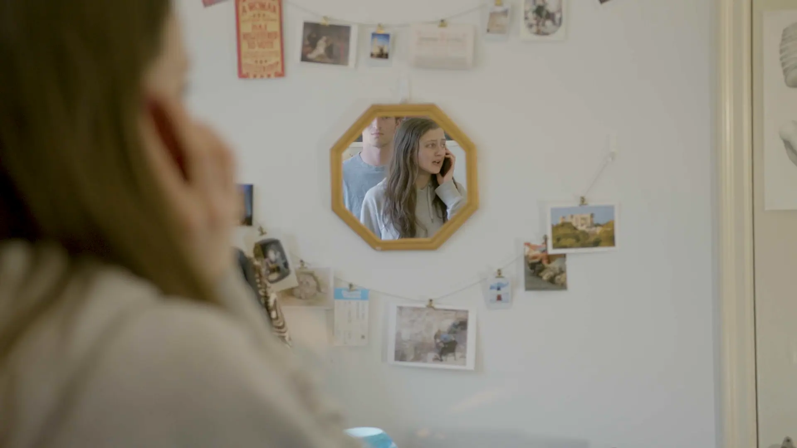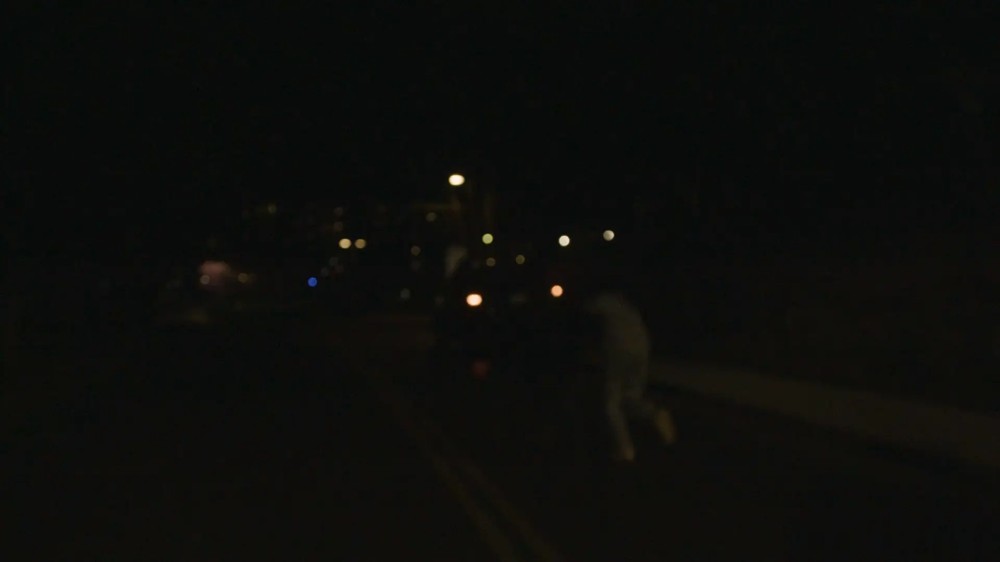Jolinna worked as director of photography on Crosswalk, a film about a college student haunted by her previous relationship.
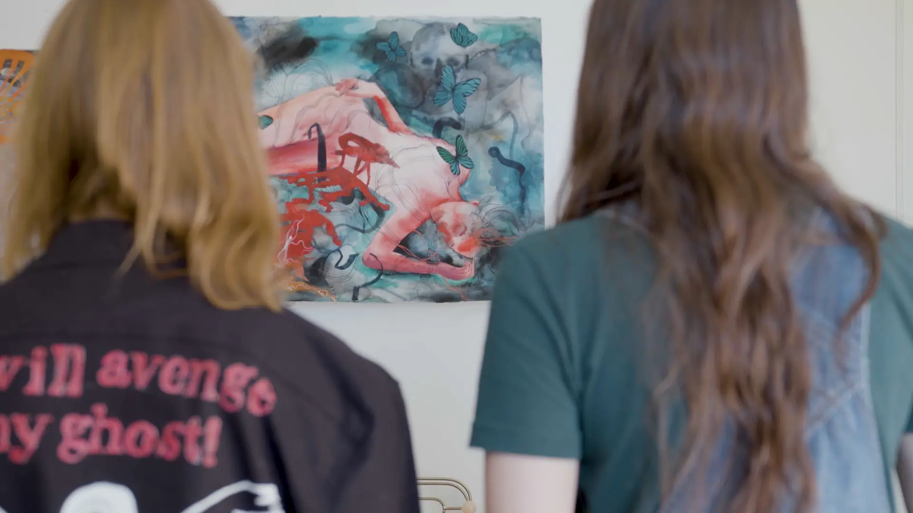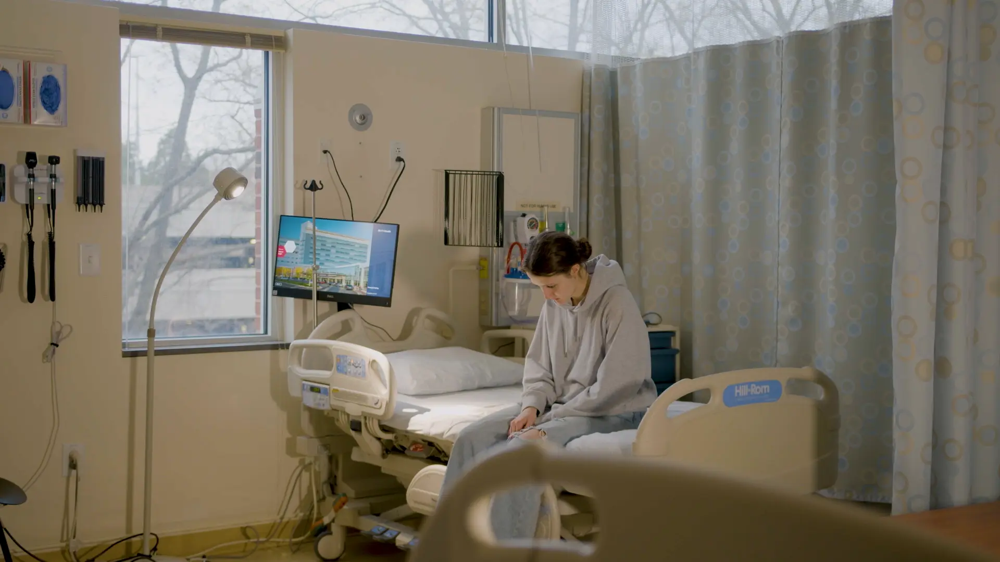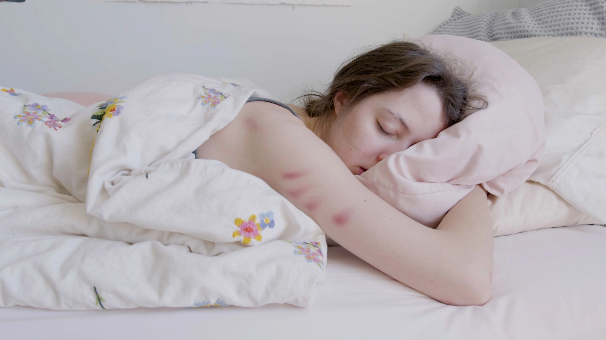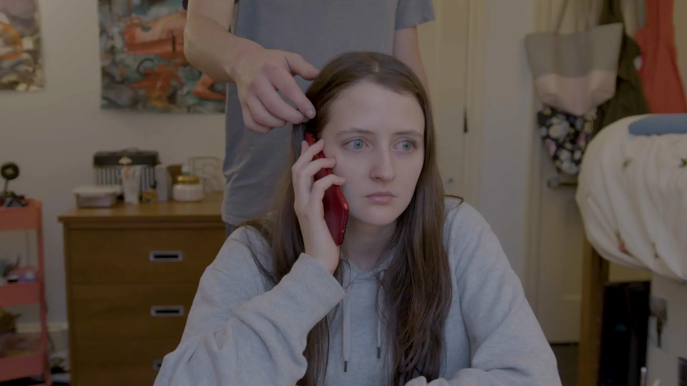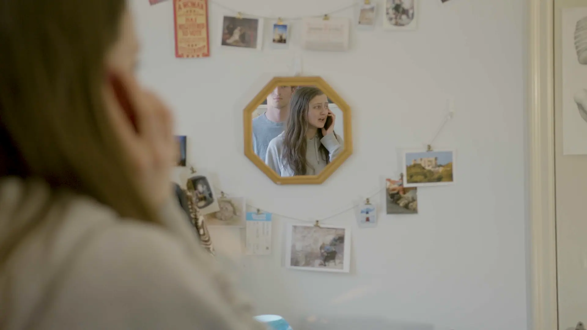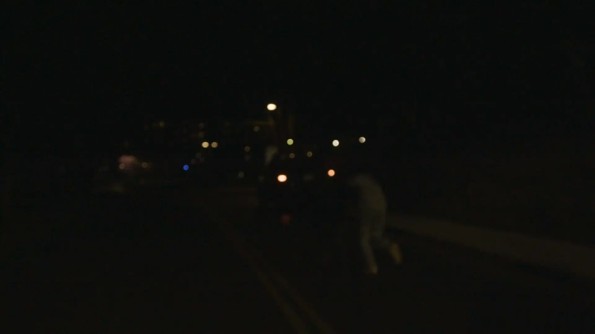